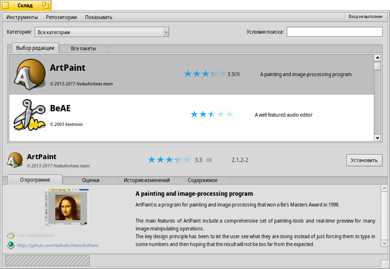
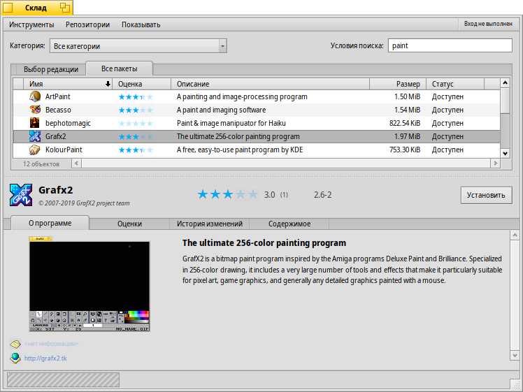
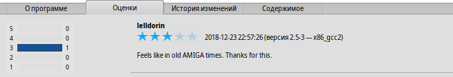
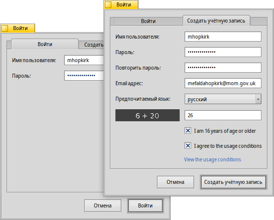
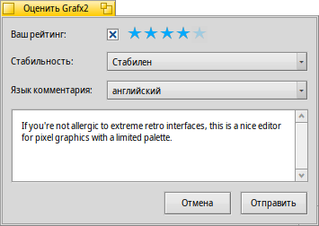

| Содержание |
| The Filter The List The Info Area Tools and Show menus Creating a User Account Rating and Commenting Diagnostic Logs |
 Склад (HaikuDepot)
Склад (HaikuDepot)
| Расположение в Deskbar: | ||
| Расположение в Tracker: | /boot/system/apps/HaikuDepot | |
| Настройки хранятся по адресу: | ~/config/settings/HaikuDepot/main_settings ~/config/cache/HaikuDepot/ - Кэшированные иконки, скриншоты, описания и т. д. |
HaikuDepot is the central application when it comes to managing your software packages. With it you can browse and search through package repositories and install and uninstall packages. By default, HaikuDepot starts up with a list of "Featured packages", software that's deemed interesting to many users.
The second tab shows , the display changes to smaller icons and more information arranged in columns:
 Фильтры
Фильтры
Вверху мы видим несколько способов фильтрации списка пакетов:
- позволяет ограничить перечень определенной категорией, например "Аудио" или "Игры".
- фильтрует список, отображая лишь те пакеты, которые содержат введенные слова (разделенные пробелом) в названии и описании.
В меню - можно выбрать запрашиваемые репозитории. Источник ("Локальный") указывается для пакетов, установленных не из сетевого источника. К примеру, это может быть USB-флэшка, пакет, скачанный с веб-сайта или собранный самостоятельно.
Список
Как и в любом окне Tracker, вы можете выбрать из контекстного списка, какие колонки отображать, кликнув правой кнопкой по заголовку любой из них. Левый клик сортирует список по конкретной колонке. Конечно же, вы можете изменить порядок расположения колонок, перетаскивая их на новую позицию.
Колонка "Статус" может иметь одно из нескольких значений:
: Пакет в данный момент установлен и готов к использованию.
: Пакет существует в репозитории и может быть скачан и установлен. Если присутствуют какие-либо зависимости от других пакетов, вы будете проинформированы об этом в процессе установки и вам будет дана возможность выбрать установку всего необходимого.
: Ожидание... отображается для пакета, который стоит в очереди на скачивание и установку. В процессе скачивания прогресс отображается в виде процентного значения.
Вы можете захватить пунктирную линию между списком пакетов и информационной областью и изменить высоту списка.
Информация
At the bottom is an area that displays information on the package that is currently selected in the list above it.
To the right of package name, author, rating and version is a button, that – depending on the current state of the package – lets you or it. If a package is already installed, you'll find an additional button there to the application.
Ниже находятся четыре вкладки: О программе, Оценки, История изменений и Содержимое.
Первая вкладка содержит подробное описание пакета и скриншоты, а также адрес и ссылку на официальный сайт команды, которая отвечает за поддержку пакета, если таковая имеется. Клик по скриншоту открывает его полноразмерную версию в новом окне.
Вторая вкладка отображает оценки и комментарии пользователей в случае их наличия.
Слева находится статистика, отображающая количество звезд (от 1 до 5), которые пакет получил от определенного количества пользователей.
В центре расположены комментарии, также содержащие ник пользователя, количество поставленных звезд и версию оцениваемого пакета. Вы узнаете о том, как оценивать и комментировать пакеты самостоятельно ниже.
Третья вкладка отображает подробную историю всех версий пакета, выпущенных на данный момент, если ответственный за него человек предоставил эту информацию.
Последняя вкладка отображает все файлы и папки, содержащиеся в пакете. Это актуально лишь для уже скачанных пакетов.
Инструменты и отображение
В меню вверху окна находится опция . Она запрашивает обновленный список всех пакетов из репозиториев.
Второй пункт - . Он открывает панель настроек Репозитории, с помощью которой можно добавлять и удалять либо включать и отключать репозитории.
Пункт запускает Обновление приложений для поиска и установки обновленных пакетов.
В меню вы можете выбрать, отображать ли и в общем списке. Для обычного пользователя они не представляют особого интереса и будут лишь загромождать список. Тем не менее, данные пакеты важны для людей, которые нуждаются в библиотеках, заголовочных файлах из пакета для разработки и компиляции приложений, зависящих от них.
Более интересны другие две опции, позволяющие показывать только и .
Создание учетной записи пользователя
Чтобы иметь возможность оценивать пакет, вам необходима учетная запись на сервере Haiku Depot, который обслуживает все пакеты, а также хранит оценки и комментарии пользователей. Вы можете создать аккаунт в приложении HaikuDepot, кликнув на область в правом верхнем углу, которая отображает ваш текущий статус: . Выбор опции , открывает окно с двумя вкладками; одна предназначена для ввода логина и пароля (когда они у вас будут), а вторая - для создания учетной записи:
Для создания учетной записи вам необходимо:
- использовать любое имя пользователя без заглавных букв и специальных символов
- использовать пароль длиной минимум восемь символов, содержащий минимум две заглавные буквы и две цифры
- указать корректный адрес email (если вы хотите иметь возможность получить новый пароль в случае, когда старый - забыт)
- ответить на капчу
- tick the checkmarks to confirm you're over 16 and have read the usage conditions linked below them.
После входа в правом верхнем углу окна HaikuDepot будет написано вместе с вашим ником. Данное меню теперь позволяет вам или .
Оценки и комментирование
После создания учетной записи и входа в систему вы можете оценивать пакеты и оставлять комментарии, если хотите. Наведите курсор на рейтинг пакета в виде звезд в разделе информации и он превратится в кнопку . Нажмите на нее для открытия окна оценки:
Вы можете навести мышь на звездочки, чтобы подсветить их и поставить свою оценку. Вы также можете указать стабильность пакета, выбрав один из предоставленных уровней, и язык вашего комментария. Чтобы сделать комментарий значимым, вы должны сперва некоторое время поработать с приложением, дабы познакомиться с его возможностями, проблемами и особенностями. И старайтесь не растягивать комментарий до размеров романа, пишите кратко, вежливо и по существу :)
После нажатия кнопки данные будут переданы на сервер. Вам, возможно, придется выбрать в меню опцию , прежде чем вы сможете увидеть ваши изменения.
At any time, you can come back and edit your comment and re-rate it. You can also hide your rating from other users by deactivating a checkbox , that appears in this window once you've rated a package.
Diagnostic Logs
As HaikuDepot is used, it interacts with network as well as local services. Things can go wrong, sometimes in ways that were not anticipated when the application was written. In those cases the error message may be quite unspecific. To help diagnosing a given problem, HaikuDepot can provide a log of what the application does.
An error message may suggest to view the logs to get further in-depth information or you may be asked to provide the log when you file an issue at the Haiku bug tracking system.
To see the diagnostic logs, HaikuDepot needs to be started from Terminal:
HaikuDepot -v debug
The command uses the -v flag to control the verbosity of the diagnostic logs. Possible values are: off, info, debug and trace. Using off will do only a small amount of logging, while trace does it in the highest detail.
As HaikuDepot starts up and when interacting with the application, you will see text scroll by in the Terminal window; this is the diagnostic log.